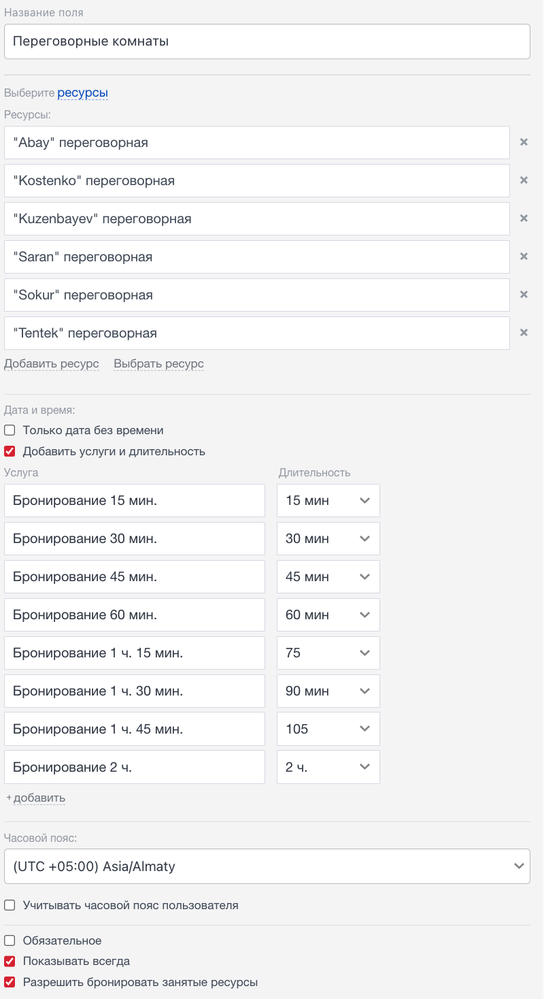
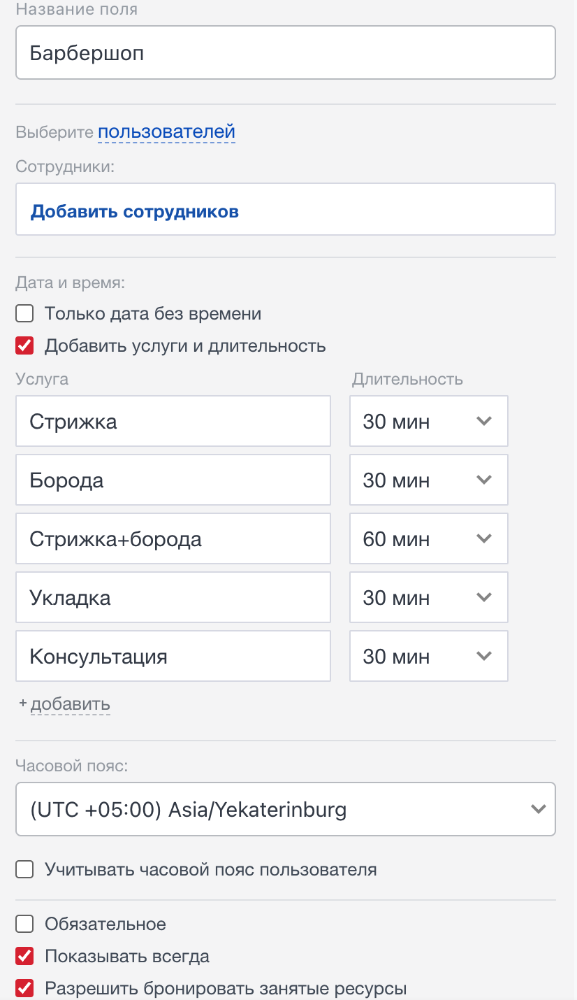
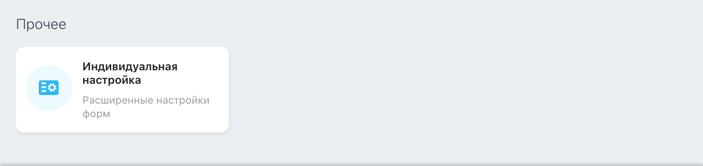
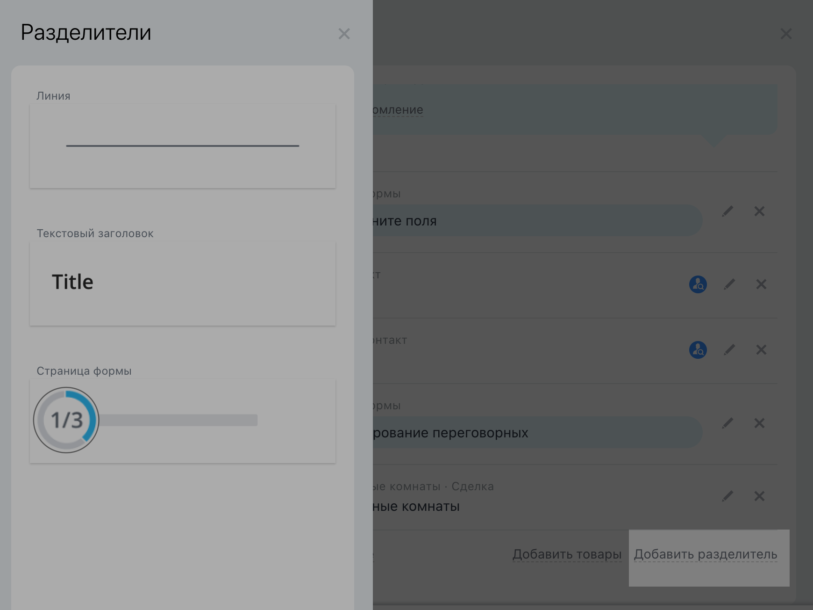
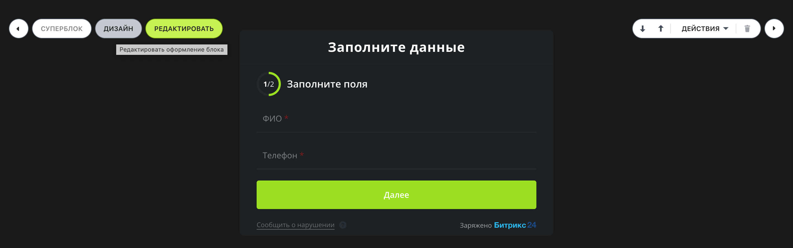
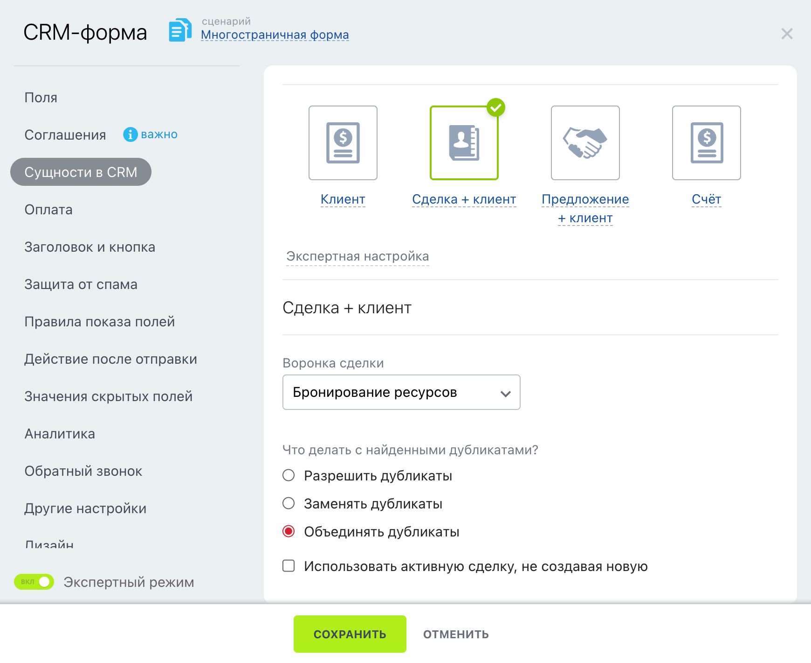

Указываем длительность каждой услуги для корректного отображения бронирований.
Опция «Только дата без времени» используется для услуг длительностью весь день (один ресурс — одна бронь).

Настройка ресурсов в Битрикс24
Настроенные поля и ресурсы для точного учета бронирований.

Результат настройки полей и ресурсов
Создание форм для записи
Формы позволяют клиентам самостоятельно записываться через сайт или ссылку. Настраиваем форму в разделе «CRM-формы».
Настройка полей формы
Создаем форму с индивидуальной настройкой.
Добавляем страницу 1: поля «ФИО» и «Телефон» (обязательные, с включенной опцией «Автозаполнение» для удобства повторных записей).
Добавляем страницу 2: поле «Бронирование ресурсов» с настроенным визуальным отображением.
Включаем соглашение «Я согласен с обработкой персональных данных».

Настройка полей CRM-формы
Дизайн формы
В разделе «Дизайн» настраиваем внешний вид формы, чтобы она соответствовала бренду и была удобной для клиентов.
Дизайн CRM-формы
Интеграция формы
Для сайта: Копируем «Код на сайт» и передаем программисту или дизайнеру.
Для соцсетей: Используем «Публичную ссылку» (например, для Instagram).

Интеграция формы на сайт или в соцсети
Управление дубликатами
В разделе «Сущности» в CRM включаем экспертную настройку и активируем опцию «Объединять дубликаты», указав целевую воронку для бронирований.

Настройка управления дубликатами
Форма для самостоятельной записи клиентов, интегрированная с воронкой.

Результат настройки формы
Триггеры, роботы и автонапоминания
Автоматизация воронки обеспечивает бесперебойную работу системы бронирования.
Настройка этапов
Воронка работает автоматически. Этапы «Успешно» и «Неуспешно» переименованы в «Бронь закончилась» и «Бронь отменена». В карточке сделки отображаются данные: {{Имя}} и {{Услуга}}.
Роботы и триггеры
Настраиваем роботов для автоматических действий:
Отправка подтверждения брони клиенту.
Уведомление менеджера о новой записи.
Смена статуса при отмене или завершении брони.
Автонапоминания
Роботы отправляют клиентам напоминания о предстоящей брони (например, за день до визита) через email или мессенджеры.
Настройка роботов и автонапоминаний
Автоматизированная воронка с уведомлениями и контролем статусов.
Аналитика бронирований
Аналитика помогает отслеживать эффективность системы:
Количество бронирований по ресурсам и услугам.
Процент отмен и успешных записей.
Загрузка ресурсов (например, занятость мастеров или помещений).
Используйте отчеты в CRM для анализа и оптимизации процессов.
Понимание загрузки и эффективности системы бронирования.